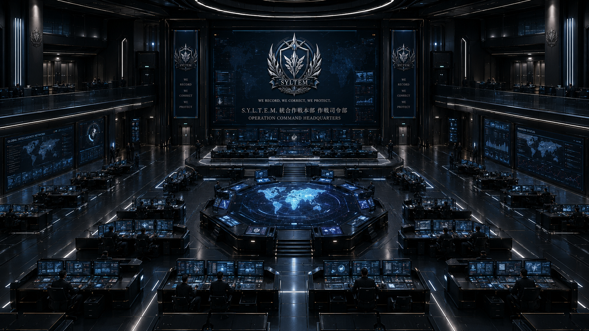
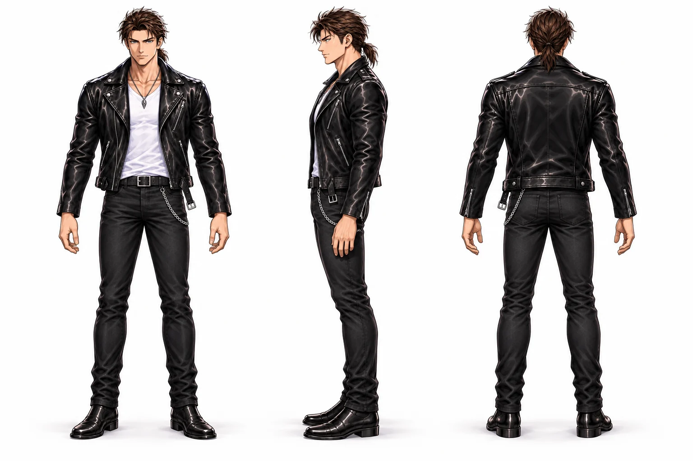
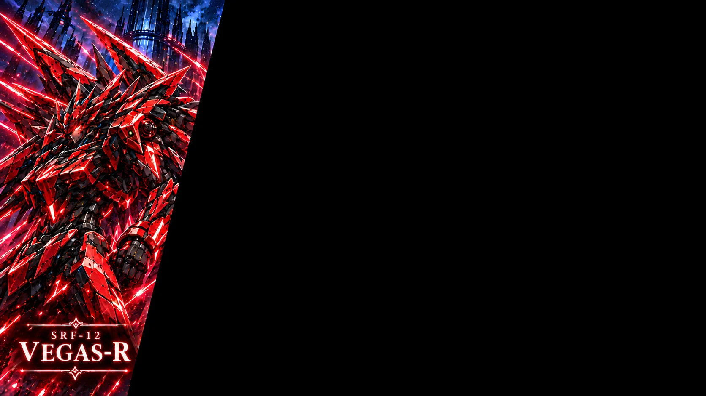
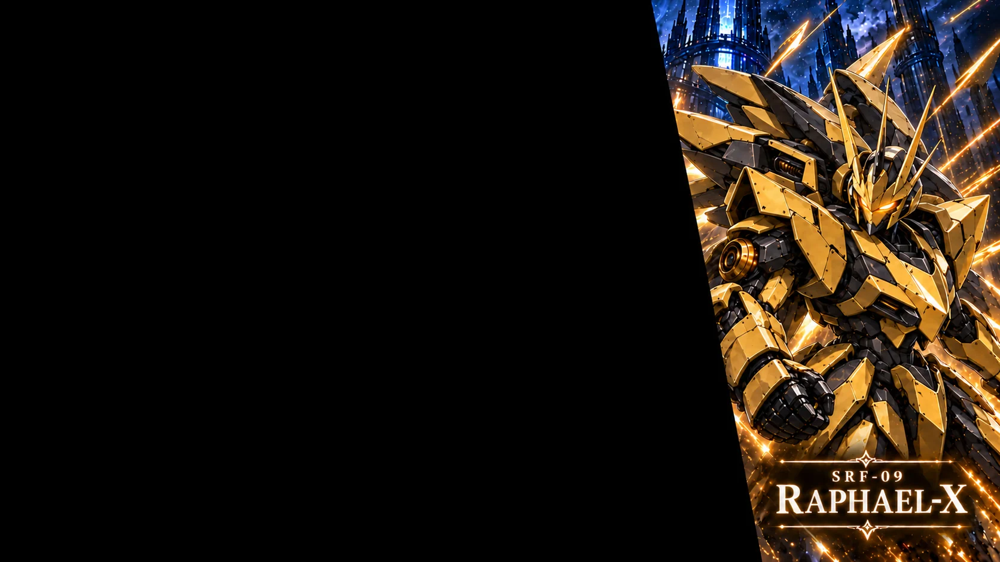

LATEST COMIC
COMIC / 第１話・第２話
本文139ページまで
公開中。
第２話「空欄の向こうに」を追加。第１話「消えかけた名前」も、絵と台詞の修正を反映した最新版に更新しました。
読んだページは、この端末・ブラウザーに自動保存されます。
秘密組織 SYLTEM
世界は、本当に
正しく読めているのか？
S.Y.L.T.E.M. / OFFICIAL ARCHIVE
00 / ARCHIVE UPDATES
シルテム概要の、新しい記録。
COMIC / 第１話・第２話
第２話「空欄の向こうに」を追加。第１話「消えかけた名前」も、絵と台詞の修正を反映した最新版に更新しました。
読んだページは、この端末・ブラウザーに自動保存されます。
UPDATE LOG / 更新履歴
01 / THE BEGINNING
FILE 01 / WORLD
名前、記憶、歴史。そして、そこに誰かが存在するという事実。この世界は「記録され、読まれている」。だが、その記録には、本来存在しない情報が混ざることがある。
それは、世界そのものの記録ミス――「誤記録」。深層から現実へ侵食し、人の記憶や存在さえ書き換えていく。人類は本来、それを異常として認識できない。

FILE 02 / ORGANIZATION
S.Y.L.T.E.M.(=Synchronizing Yield of Linguistic Truth and Error Management)
世界情報層における言語的真実性維持、および誤記録災害封鎖を目的として設立された極秘認識管理機関。
通称、『シルテム』。
情報層・記録層・言語層の異変を監視し、改変された記録を修復する。その活動を、一般の人々が知ることはない。
現場で救助と戦闘にあたるサトシ。潜入と情報回収を担うカケル。兵装・認識解析・整備を支えるシュウ。そして、戦場の情報を見極め、仲間の帰還を最優先するセイカ。それぞれの役割をつなぎ、誤記録の侵食を食い止めている。
現場で活動する隊員を支えるのが、SYLTEMの機体と技術。異変のただ中で、救助と封鎖を遂行するために。
一方で誤記録を解放し、固定された世界を変えようとする組織が暗躍しているとも知らずに・・・・・・
特殊刑事課を辞めて数日。クロガネ ハヤトは、買い物へ向かった街で、周囲から認識されなくなっていく少女に出会う。姿だけでなく、記憶も記録も変わり、少女は最初から存在しなかったことになっていく。それでも、ハヤトには彼女が見えていた。
少女を救おうとするアカツキ サトシとヤマブキ カケル。彼らとの初めての出会いを通して、ハヤトは日常の裏側を知る。日常から非日常へ、自分自身の選択が待っている。
誤記を誤記として認識できること自体が、
誰かに守られている。

元・特殊刑事課
KUROGANE HAYATO
特殊刑事課を退職した元刑事。肩書きを失っても、困っている人を見ると身体が動く。ある日の街での出会いをきっかけに、日常の裏側へ足を踏み入れる。
茶髪を襟足で結び、黒い革ジャケットをまとう。
三面図を見る ↗03 / PERSONNEL NETWORK
登場人物たちのつながりを紹介します。詳しい関係は、ネタバレ防止をOFFにすると読めます。
OFFにすると、本編のネタバレを含む全ての関係・説明を表示します。
人物を選ぶと、つながりを紹介します。
主人公
特殊刑事課を辞めた元刑事。困っている人を放っておけない、実直な性格。ある日の出会いから、SYLTEMの人々と関わっていく。
関係名を選ぶと、紹介文を開きます。
04 / MACHINE ARCHIVE
救助と局所封鎖。そのための二機。

SRF-12 / AKATSUKI SATOSHI
アカツキ サトシの機体。救助と局所封鎖を担う。

SRF-09 / YAMABUKI KAKERU
ヤマブキ カケルの機体。金の装甲を持つ。仲間の判断と支援をつなぎ、救助にあたる。
05 / VISUAL RECORDS
戦いの間にも、彼らの日常は続く。
キービジュアルは作品全体のイメージです。
06 / WORLD REFERENCE
当たり前の世界を、当たり前のままに。
「誰が、どこに存在しているか。」
その記録は、現実と結びついている。
第１話の入り口となる用語を収録。
項目を選ぶと記録を閲覧できます。
書類や写真だけを指す言葉ではない。誰が、どこに存在しているかという、世界そのものの記録。現実と結びついており、その変化は人々の記憶や通常の記録にも及ぶ。
世界の記録に、本来ない情報が混ざること。ただの誤字とは異なり、現実そのものに変化を引き起こす。人々の日常や記憶にも影響を及ぼす、不可解な現象。
姿が見えなくなるだけではなく、周囲の記憶や記録も書き換わり、最初から存在しなかったことになっていく。
SYLTEMは現場の情報を集め、異変の調査と人々の救助にあたる。状況を見極めながら、被害の拡大を防ぐために行動する。
世界の記録に関わる異変に対処する組織。現場の救助、情報の収集、技術支援、指揮をつなぎ、人々の日常を守る。ハヤトは少女の事件を通して、彼らと初めて出会う。
UNIDENTIFIED ACCESS
記録の向こうから、何かが触れている。